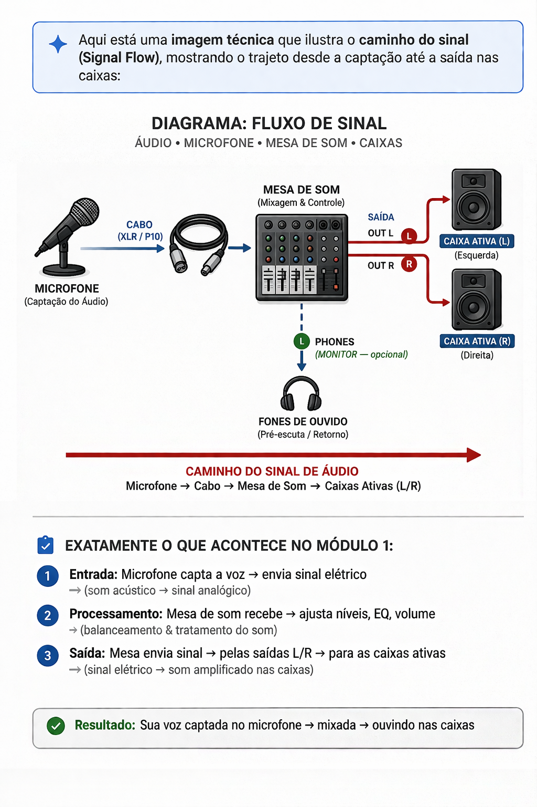

O Caminho do Sinal, ou Signal Flow, é o conceito mais importante para um sonoplasta. É o trajeto que a energia percorre desde o momento em que alguém fala ao microfone até o som sair nas caixas de som da congregação. Se você conhece o caminho, você descobre o erro em segundos.
Passo 1. A Transdução: Tudo começa na fonte. O microfone é um transdutor; ele capta a pressão sonora da voz e a transforma em uma voltagem elétrica baixíssima (Nível de Microfone).
Passo 2. O Transporte: Esse sinal elétrico é frágil e sofre interferências. Por isso, usamos cabos XLR (balanceados). Eles possuem três pinos e uma malha de proteção que anula ruídos externos e chiados antes de chegar à mesa.
Passo 3. O Pré-Amplificador: Ao chegar na mesa de som, o sinal entra pelo conector XLR. Como ele chega muito "fraco", precisamos usar o botão de Ganho (Gain) para elevar esse sinal até um nível que a mesa consiga trabalhar sem chiado.
Passo 4. O Processamento e Saída: Depois de ganhar força, o som passa pelo equalizador, vai para os faders e, finalmente, é enviado para os amplificadores e caixas de som (PA).